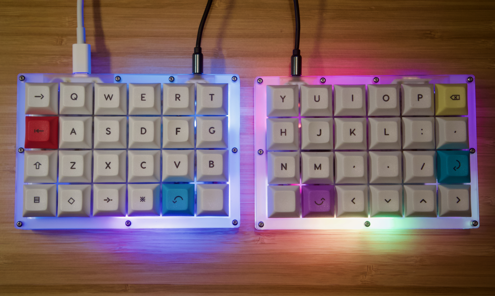
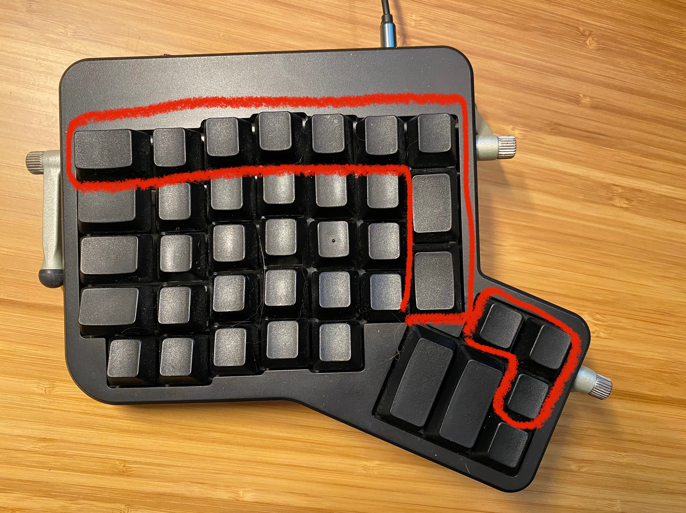
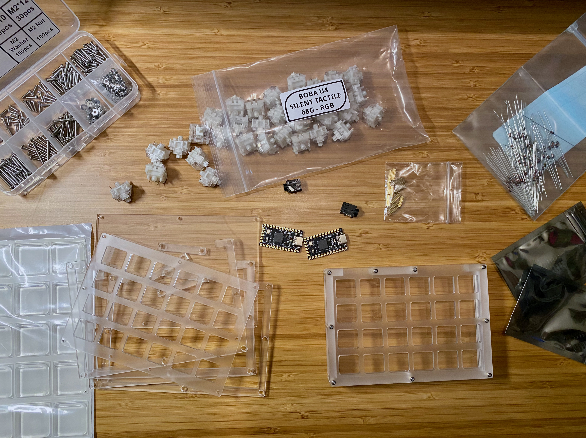
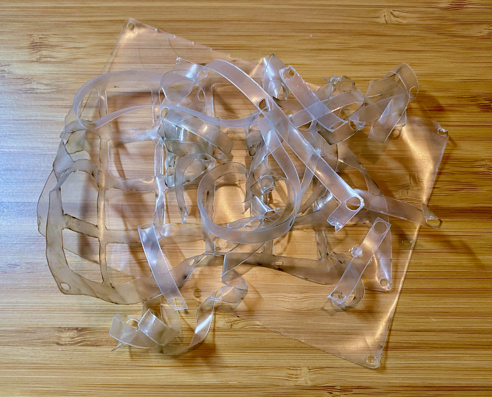
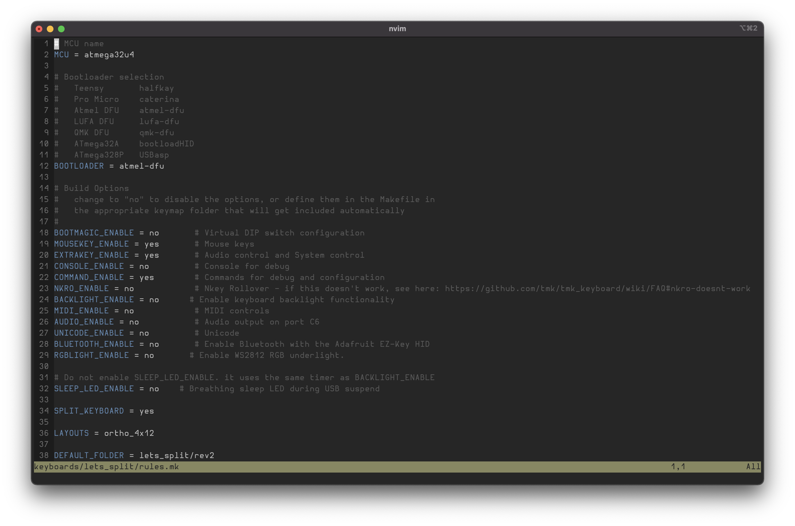
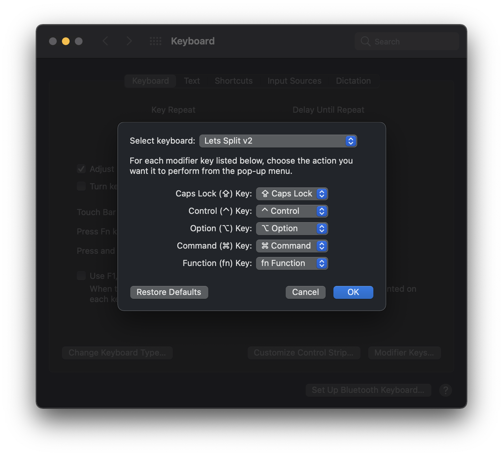
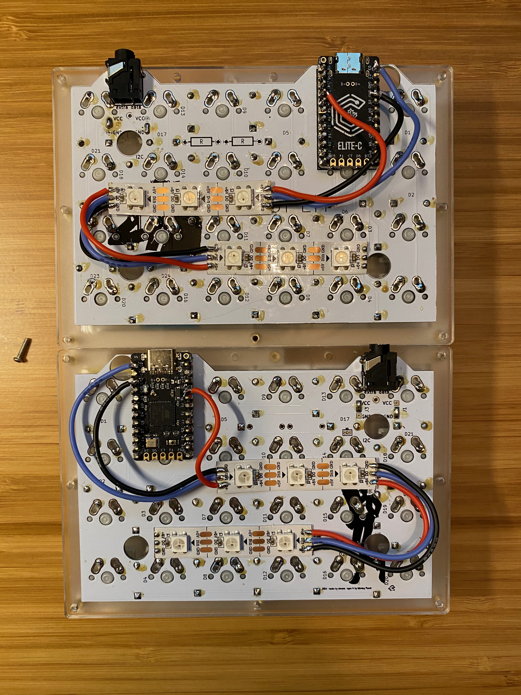
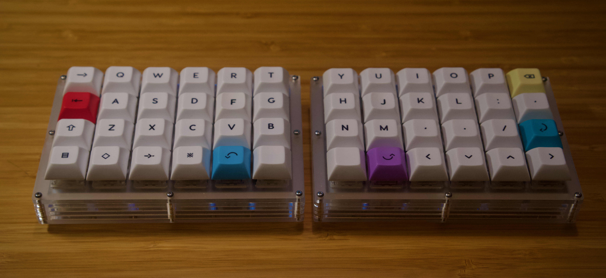
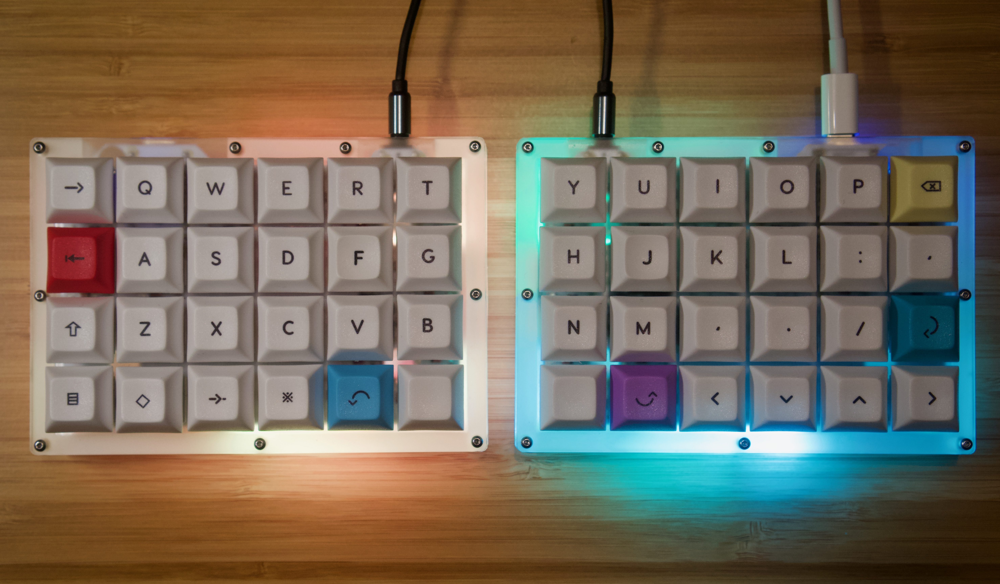
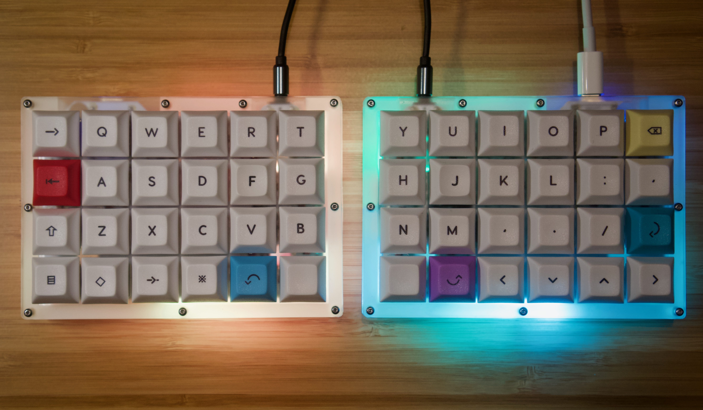

I first became interested in mechanical keyboards back in high school (because you need n-key rollover to win at Minecraft) but it wasn’t until around three years ago that I became interested in keyboards that deviate from the standard layout. For nearly that entire time I’ve been a faithful ErgoDox EZ user and evangelist. It’s always available, highly configurable, and user friendly. All things considered it’s an excellent keyboard that any reasonable person would be completely satisfied with. I, however, am not a reasonable person. As time has passed I have become bothered by a trivial complaint: the ErgoDox has too many keys. Seriously who uses these and what do their thumbs look like?

Do these keys interfere with my use of the keyboard? Literally not at all. They do interfere with my aesthetic sensibility though, and so I set out to find an alternative. I’ve always found the Planck keyboard to be aesthetically pleasing—something about its symmetry and uniformity speaks to me. So when I found out that a split version of the Planck called the Let’s Split exists, I knew it was the one. Maybe not the one forever, but at least be the one I want to build first (I can already tell this is going to be a rabbit hole).
Having explained all that, here is a list of the requirements I was hoping to meet with this build:
- Split keyboard
- About 40% size (QWERTY keys plus an outer row on each side and a bottom row—48 keys)
- Quiet(er) operation (to facilitate working in coffee shops/co-working spaces post-COVID)
- Robust enough to throw in a backpack
- USB-C port for easy MacBook compatibility
- Either side can act as primary (plugging the right or left half into the computer both work)
Build Notes
For the most part I followed the excellent Let’s Split build guide, with a few notable exceptions.
Instead of using the open sandwich case prescribed in the guide, I chose to use the closed sandwich design available here, to improve the backpack-robustness factor. One important note on this point—in order to use a case material that is not the same on both sides (I used matte clear acrylic, which only has a matte finish on one side) I used the modified design from this PR. It flips half of the top and bottom plates; otherwise one side of the keyboard will have the smooth side facing out, and the other side will have the matte side facing out.
The other change I made was to use the Elite-C v4 instead of the Pro Micro, because my desire for USB-C was stronger than my desire to not spend 2x as much money on microcontrollers. I also have not soldered since college and I am relearning it for this project, so it may not be the prettiest (I’m writing this ahead of the assembly, so we’ll find out together). I’m using leaded solder because I’ve heard it’s easier to work with as a beginner, and I plan to just do a thorough desk cleaning post-assembly.
Parts List

- Case (linked in previous section)
- PCB
- Elite-C v4 x 2
- 1N4148 Diodes x 100
- TRRS Jacks x 2
- Boba U4 Silent Tactile Switches 68g x 48
- 10mm M2 Standoffs x 18
- 6mm M2 Hex Button Head Screws x 36
- Rubber Feet x 8
- Keycaps
- 24 AWG Wire
- LED Strip
- Switch Lube (if you’re into that sort of thing)
- USB-C and TRRS cables
- Assorted tools and supplies (soldering stuff, switch opener, lube brushes, etc…)
Assembling the Case
I did this first as a test fit because it got here first and I’m impatient. There is a ton of plastic backing that needs to be peeled off, which sounds fun but in reality is frustrating and really messed up my finger nails.

The approach I took was to fasten the standoffs to the top plate and then stack the middle layers onto that, before attaching the bottom layer.

In retrospect I probably should have fastened them to the bottom plate first, as I’ll have to take the top plate off for assembly. Doing so will be difficult to since the standoffs aren’t anchored to the bottom plate and will turn freely. Live and learn I suppose.
Flashing
I found out while trying to build the firmware that QMK depends on the qmk CLI tool, which can only be installed via Homebrew, which I don’t use (I’m a MacPorts guy). Some cursory searching indicated that Homebrew and MacPorts don’t play nice when coinstalled, so I decided to avoid going that route.
My next thought was to use Docker to do the install, but lo, Docker for Mac can’t access the system USB ports without a tedious workaround, so that idea also went out the window.
Bad Idea #3 was to install Linux via Boot Camp—turns out that is also tedious and error-prone (I’m starting to see a trend).
Finally, I decided that the answer was to use a solution I haven’t reached for in years: an actual VM managed via Vagrant. QMK actually supports this, so it wasn’t too bad to get setup. Just install Vagrant and VirtualBox, fiddle with the necessary macOS Security & Privacy settings (I had to press “Allow” for apps from Oracle on the main screen, and enable Full Disk Access for iTerm), restart, and we’re good to go. We’ll also need the VirtualBox Extension Pack in order for the VM to access the computer’s USB ports.
The Elite-C v4 comes with the Atmel DFU bootloader preinstalled, so we’ll need to target that with our QMK make command. The following steps are gleaned from the QMK Flashing and Split Board docs.
First we’ll need to fork the QMK repo and clone it locally. Then navigate into the top-level directory of the repo, and start the VM:
# On host machine in ~/qmk_firmware
$ vagrant up
It will take some time (especially on the first boot) but eventually a blurb from QMK will appear regarding how to use the VM, meaning the machine has been provisioned. If this is the first time booting the machine, it will be necessary to open VirtualBox and manually enable USB on the VM. To do so, first stop it by running:
# On host machine in ~/qmk_firmware
$ vagrant halt
Then navigate to the halted machine in VirtualBox, and add the USB device by doing the following: right click -> Settings -> Ports -> USB; select USB 3.0; click the + icon on the box below; select the ATMEL ATm32U4DFU device; and save the settings.

Then restart the VM by running vagrant up again. Once the machine has restarted with USB access, we’ll need to SSH into it in order to build and flash the firmware. To do so, run:
# On host machine in ~/qmk_firmware
$ vagrant ssh
Following this we’ll navigate into the VM’s shared drive, which is where the qmk_firmware directory will be mounted, by running:
# On VM
$ cd /vagrant
Next I tried to just flash the firmware, but I got some error messages indicating that my git repository was missing some necessary submodules. To remedy this, run the following command (this should only be necessary the first time, since the changes will be persisted on the host machine via the mounted folder):
# On VM in /vagrant
$ make git-submodule
Now we’re almost ready to flash. The last thing we need to do is make a few tweaks to the firmware configuration.
Instead of making changes to an existing keymap, we’ll copy the default keymap and make our changes there; that way we can make further tweaks later. I named my new keymap jcrane and will be referring to it as such in the commands, but you can obviously choose whatever name you like.
We’ll also need to copy rules.mk from the keyboard root into the new keymap folder, since some tweaks are required there as well.
# On host machine in ~/qmk_firmware
$ cp -r keyboards/lets_split/keymaps/default keyboards/lets_split/keymaps/jcrane
$ cp keyboards/lets_split/rules.mk keyboards/lets_split/keymaps/jcrane/
To use the Atmel DFU bootloader instead of Caterina, open up rules.mk in any text editor (this step and the next don’t need to be run inside the vagrant terminal):
# On host machine in ~/qmk_firmware/keyboards/lets_split/keymaps/jcrane
$ vim rules.mk
Then set the value of BOOTLOADER to atmel-dfu:

Next, to support either half of the board acting as the primary, we need to enable EE_HANDS in config.h:
# On host machine in ~/qmk_firmware/keyboards/lets_split/keymaps/jcrane
host$ echo "#define EE_HANDS" >> config.h
NOTE: There are a few other tweaks required for boards that have RGB underglow, which will be detailed in a later section. I would recommend making these tweaks before assembly, since they can cause the board to enter a state that requires the microcontrollers to be reset manually (by shorting the GND and RST pins). This is annoying to do after assembly, since you will have to take the case apart.
Now on to the main event! QMK uses make to build and flash the microcontroller. The format of the make command is as follows:
make $PROJECT_NAME:$KEYMAP[:$TARGET]
For now we’re just going to flash the copied default keymap—we can come back and customize it later.
In order for EE_HANDS to work properly, we’ll need to designate one of our microcontrollers as the left hand side and the other as the right hand side by targeting dfu-split-left and dfu-split-right, so choose which one will be which and label the bag or find some other way to distinguish them. Then, plug in each microcontroller and run the following commands for the left and right sides respectively (inside the vagrant terminal):
# On VM in /vagrant
# For the left half
vagrant$ make let_split/rev2:jcrane:dfu-split-left
# For the right half
vagrant$ make let_split/rev2:jcrane:dfu-split-right
Now when we plug in each controller and navigate to the system keyboard settings, we should see “Lets Split v2” in the drop down.

Success!
Assembling the PCB
NOTE: Before beginning assembly of the PCB, follow the flashing instructions above to flash the microcontrollers. We want to ensure they aren’t duds, since desoldering them is allegedly a PITA.
To be completely honest, I totally forgot to take any pictures during this part of the process. I was streaming the build and it just sort of slipped my mind. That said, the steps in the guide linked above are very thorough and anything I did would likely be redundant. For a short overview of the steps:
- Solder on the diodes and TRRS jacks (make sure to do it on the right side of the board for each half, they should be mirrored).
- Solder the jumpers below the TRRS jacks into the proper configuration—this is one area in which I think the guide could use some clarification. It says to solder the jumpers in the following configuration and to do both PCBs the same:
VCC [x] [ ] VCC
[x] [x]
GND [ ] [x] GND
For whatever reason I found this very confusing and had to seek out some pictures for clarification, but in essence: when looking at the bottom of either PCB (that is the side with the TRRS jack on it) when the TRRS jack is facing upwards the jumpers should look like the above diagram—they should NOT be mirrored. If that explanation is still subpar, just refer to this image, which has the jumpers both soldered in the correct configuration:

- Attach the microcontroller headers.
- Place the top plate over the PCB and solder in a switch on each corner, and the two switches whose pins reside under the microcontroller.
- Solder in the microcontrollers and the rest of the switches.
Adding RGB Lighting
This is one place where the guide is outdated. It suggests running the lighting signal through the TRRS cable, but this would mean only one half could run the lighting.
To support either half acting as primary with lighting, I followed the instructions from QMK. Basically, attach VCC and GND on the board to the corresponding pins on the LED strip, and then connect the TX0 pin on each microcontroller to the DIN pin on the LED strip. If you split the strip into multiple parts, just connect the VCC and GND from piece to piece, and DO to DIN (see the picture in the previous section for a visual explanation).
In order to support split RGB lighting, we’ll need to make one more tweak to the firmware and reflash. To do so, we’ll need to add a few more defines in config.h:
# On host machine in ~/qmk_firmware/keyboards/lets_split/keymaps/jcrane
$ vim config.h
# config.h
...
#define RGBLED_SPLIT { 6, 6 }
#define RGBLIGHT_ANIMATIONS
The numbers indicate the number of LEDs on each half. I used 6 LEDs on each, hence the { 6, 6 }. It’s important to do this before closing up the case, since it causes the two halves of the keyboard to be unable to communicate with one another until it is set on both halves. Since the default keymap requires both halves of the keyboard to reach the RESET key, this is an inconvenient side effect once the case is closed.
We’ll also need to set RGBLIGHT_ENABLE to yes in rules.mk.
Finished Product
Here’s what the finished keyboard looks like:

 

As you can see, both sides are capable of acting as the primary with illumination. Mission accomplished!
Retrospective
I’m typing this conclusion on my ErgoDox, which tells you about how well my replacement mission went. The Let’s Split did not turn out to be my keyboard to end all keyboards, or even my new daily driver. That’s not to say that I am unhappy with how it turned out, quite the contrary. Rather, I simply find the typing experience to be inferior to that of the ErgoDox for a number of reasons.
My primary complaint is that the layout is significantly less comfortable for my (somewhat large) hands. My fingers vary fairly drastically in length, so the transition from an ergo layout (columns are staggered) to an ortholinear layout (columns are aligned) was rather jarring. I found the lower middle finger keys and upper pinky keys especially problematic. Additionally, having all the thumb keys huddled under my palms instead of offset gave me hand cramps by the end of the workday that I spent testing the board.
Another factor is that the 68g Boba U4 switches are the heaviest I’ve ever used—I got a switch tester and really liked the 70g Gateron Aliaz switches, but was unable to find them in stock anywhere. I bought the Bobas as a switch that would potentially offer a similar feel. I think that I should have gone with the 62g variant, since they feel quite a bit heavier than the Aliaz 70g to my hand (probably due to a significantly larger tactile bump). I decided to lube the switches prior to my build to see if this reduced their perceived heaviness, which it did to some degree, but they are still a very tactile switch. I’m beginning to think that I’m just not that into tactile switches, and I’ll probably try some linear switches for my next build.
All in all, I had a lot of fun building the board and I’m glad that I did it. I’m happy with how it turned out, and even though I won’t be using it as a daily driver, I think it could serve well as a portable board. It is very quiet, very small, and looks cool as hell (certified bias-free opinion). It has also taught me a lot about what I want in my next board—I’m thinking a 36 key ergo board like the Akufu36 or Arch-36.